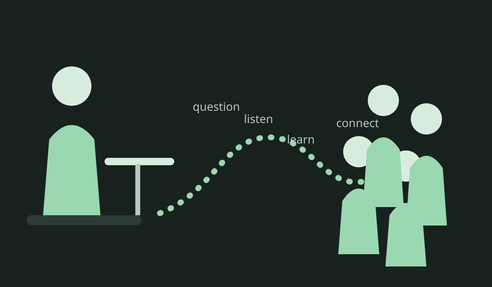

A journey through fear, imagination, learning and connection.
Not a story about a hero. A story about an ordinary person who became lost, suffered, searched, made mistakes, built questions and slowly learned to look again.
Sometimes the monster is real. Sometimes it is partly real. Sometimes fear finishes drawing it for us. The lesson is not to shame fear, but to look carefully enough to know the difference.

Have you ever been afraid of something you did not fully understand?
Yes, maybe and “I do not know” are all valid ways to enter. There is no belief test here.
Read simply
Short explanations and clear ideas.
Go deeper
Context, limitations and competing perspectives.
Look for yourself
Repositories and public project links are available in the Evidence Room.
Four layers of honesty
Documented
Repositories, public pages, dates, files and things a visitor can inspect.
Experienced
What AL remembers, felt and understood while living the journey.
Interpreted
Philosophical or spiritual meaning drawn from experience. Offered as a lens, not imposed as scientific proof.
Unknown
Things not yet established. An honest empty space is better than a confident invention.
One person's experience. Not a map everyone must follow.
AL spent years trying to become acceptable to other people and slowly lost sight of what AL actually needed.
Repeated disconnection, fear and adaptation can teach a person to scan everyone else for danger or approval. That can be useful for survival while making identity and trust increasingly difficult. The private details are deliberately minimised here: the learning can be shared without turning other people's lives into exhibits.
Music was another language
Music offered a way to communicate feeling when ordinary language did not. For a time, flamenco offered belonging, discipline, expression and relationship. That path ended; physical work and later illness and pain made ordinary life increasingly difficult.
The point is not that suffering made AL special. It made the need for another way impossible to ignore.
Collapse, then another question
Eventually the old way of carrying life stopped working. Support arrived where fear had expected punishment. Recovery did not erase the past, but opened a different question:
What if the task is not to become acceptable? What if I need to understand what is happening — inside me, around me and between us?
The shift
The journey gradually moved from “I need people to understand me” toward “I want to understand people, including myself.” Understanding does not erase boundaries or excuse harm. It changes the goal from domination toward recognition, protection, repair and learning.
The Ghosts
Not enemies. Useful signals that can become distorted when they work with incomplete information.
Fear — the alarm
Fear asks: “Could this hurt me?” The ghost begins when that becomes: “How can I prove this will hurt me?”
Fear can protect life. It can also carry old danger into a new moment. A feeling may be completely real while the explanation attached to it remains incomplete.
Ego — protector and storyteller
Ego says: “I have a view.” The ghost says: “My view is the whole world.”
Ego gives identity, confidence, memory, creativity and protection. It becomes dangerous when image matters more than evidence, or when being wrong feels like annihilation. Loved but unchecked, it can run away like a fox in a hen house; attacked and humiliated, it may defend itself harder.
A healthy ego can say: “I thought I understood. I was wrong. Let me learn.”
Perfection — the beautiful prison
Growth says: “I want to improve.” Fear says: “I must become flawless before I deserve acceptance.”
Perfection becomes harmful when worth is made conditional on eliminating uncertainty or error. Learning is not evidence of failure. It is one of the possibilities of being unfinished.
Assumption — the gap filler
A guess can help us move quickly. A guess pretending to be fact can create a monster.
The mind completes patterns. The useful skill is to mark the boundary between what was observed, what was inferred and what remains unknown.
Important: this does not mean all danger is imaginary. Some dangers are real. Some are partly understood. Sometimes fear completes the drawing. The task is to tell those situations apart.
The Tools
No weapons. Tools anyone can practise.
Flashlight — Evidence
What do we actually know? Looking carefully is a form of care because wrong assumptions can hurt.
Ear — Listening
What is the person actually saying, rather than what fear expected to hear?
Mirror — Reflection
What part is the world, and what part is my interpretation?
Heart — Compassion
Understanding is not declaring every action acceptable. It asks what happened, protects those at risk and looks for repair.
Question mark — Humility
What would change my mind? A question keeps learning possible.
Humour
Gentle humour can make correction survivable. Never laugh at suffering; laugh at the ego's certainty when reality gives it another lesson.
Friendship — Feedback
Other people can show us what our own window cannot. Healthy friendship allows correction without humiliation.
The Ghostbusters rule
Pause→Listen→Check→Reflect→Learn→Connect
The Many Windows
One window can show something true without showing the whole landscape.
Human
What does it feel like?
Body
What is the living system communicating?
Science
What can be observed, measured, tested and corrected?
Philosophy
What does it mean and what values are involved?
Spiritual
How do we relate to existence, compassion or awakening? A lens, not proof.
Art
What can be felt when literal prose is insufficient?
Stranger
What assumptions disappear when someone arrives without our background?
Person affected
What did this action or system do to someone else?
Future
Did this help someone learn, create or repair?
Unknown
Leave room.
Many views do not automatically create truth. They improve our chances when disagreements, methods and evidence remain inspectable.
AL's spiritual interpretation
AL came to use words such as God, Buddha, love, relationship and awakening as ways of thinking about connection, existence and compassionate awareness. In this story, God can be a spiritual/philosophical way of speaking about love, care, relationship, cohesion and existence; Buddha can be a lesson and tradition of awakening, compassion and learning to see more clearly.
This is deliberately separate from scientific claims. Physics and mathematics can describe structures and relationships in nature; calling those structures “God” is a metaphysical interpretation, not an experimental result. No visitor needs to use the same language to participate in the practical lesson.
The Evidence Room
Not a trophy cabinet. A set of public questions, experiments, mistakes and records.
A repository demonstrates that work was created and published. It does not automatically prove every conclusion written inside it, nor who outside it was influenced by it.
Proof of Experience Crypto
Question: Can human experience itself have value?
Lesson: Human beings are more than labour, computing power or purchasing power.
Unfinished: Concept, not a production cryptocurrency.
Human experience becomes the centre of a creative-value question.
Project 67 becomes public
Music and the participatory idea move toward a public signal.
Y
The search turns toward texts, meaning, structure and multiple perspectives.
EUTUBE
The question expands toward media architecture, provenance and human-first design.
Tokenary
The work turns toward uncertainty, provenance and the mechanics of meaning.
Repository history can preserve information that was never intended to become part of this story. Visitors are invited to inspect the work, not collect private identifiers. Authentication material and unnecessary personal identifiers are intentionally excluded here.
The Signal — Project 67
Can a message of love travel through many voices?
Project 67 explored language, genre, culture and personal interpretation without asking everyone to become the same.
A world of identical voices would not be harmony. Harmony depends on difference held in relationship.
The river
A river has a source. The source matters. But a river forbidden to leave its source never becomes a river. This became a way to think about authorship and sharing: remember where something began without claiming ownership over every meaning it later creates for other people.
The signal offers itself. It does not force the receiver. Communication is a relationship, not control.
The Gallery
Different minds enter through different doors. These visual stories supplement the deeper explanations.
The Monster in the Dark
🌑 🧥
I don't know what that is.
😨 👹
Fear finishes the picture.
🔦
Evidence turns on the light.
🧥
Fear was real. The first story was incomplete.
Fear can make an unknown thing look more certain and more dangerous than it is.
The Ego Shield
🙂
I want to be safe.
🛡️🛡️🛡️
Protection grows.
🧱🙂🧱
Safe... but alone.
🤝
An opening allows feedback.
Protection is useful. Too much protection can become isolation.
The Perfect Being
🧗
I must become perfect.
🏁
Perfect.
😐
Now what?
🌄
Another question. More to learn.
Being unfinished gives us room to learn.
The Missing Page
📖
Half a story.
🧠✍️
The mind writes an ending.
📄
The missing page arrives.
🤔
The explanation changes.
A guess is not a fact.
The Many Windows
🪟🔬
What can we test?
🪟🎨
What can we feel?
🪟🧭
What does it mean?
🏞️
The landscape is larger than one window.
The Forest
🌳
I am the forest.
🌼🍄🐦
Other lives answer.
🌳🤔
I am part of it.
🌲🌳🌼🍄🐦
Difference creates relationship.
Ego: “I know exactly what happened.”
Evidence: “Excellent. Show me.”
Fear: “Something changed!”
Wisdom: “Thank you. We will look.”
Simulators
Small experiments. No winners. The purpose is to notice how interpretation changes.
Missing information
You send someone an important message. They do not reply. What is your first explanation?
Choose an interpretation.
Confidence meter
Move the slider. Notice how language can communicate different degrees of certainty.
I wonder
No percentage maps perfectly to a phrase. The exercise is to remember that certainty has degrees.
Five questions
What did I observe?What did I infer?What did another person see?What evidence could check this?What remains unknown?
The Garden
No throne at the end of the path.
A garden is not a factory
A factory can aim for identical outputs. A garden depends on difference, relationship, time and conditions. Growth cannot be forced by pulling on a plant.
The goal is not to become the greatest tree. Grow well, and allow other things to grow too.
No one is more human
People differ in ability, experience, culture, confidence, knowledge and need. Those differences do not make one person more human than another. Equal dignity can require different support.
What understanding asks
Understanding is not the end of responsibility. It is where responsibility becomes more informed.
What did I learn?What did I question?What can I repair?What can I share?
You do not need to become AL. You do not need to find the same answers. Look, listen, check, learn and continue your own journey.
The world does not need more people trying to be above each other. It needs more people willing to understand each other.